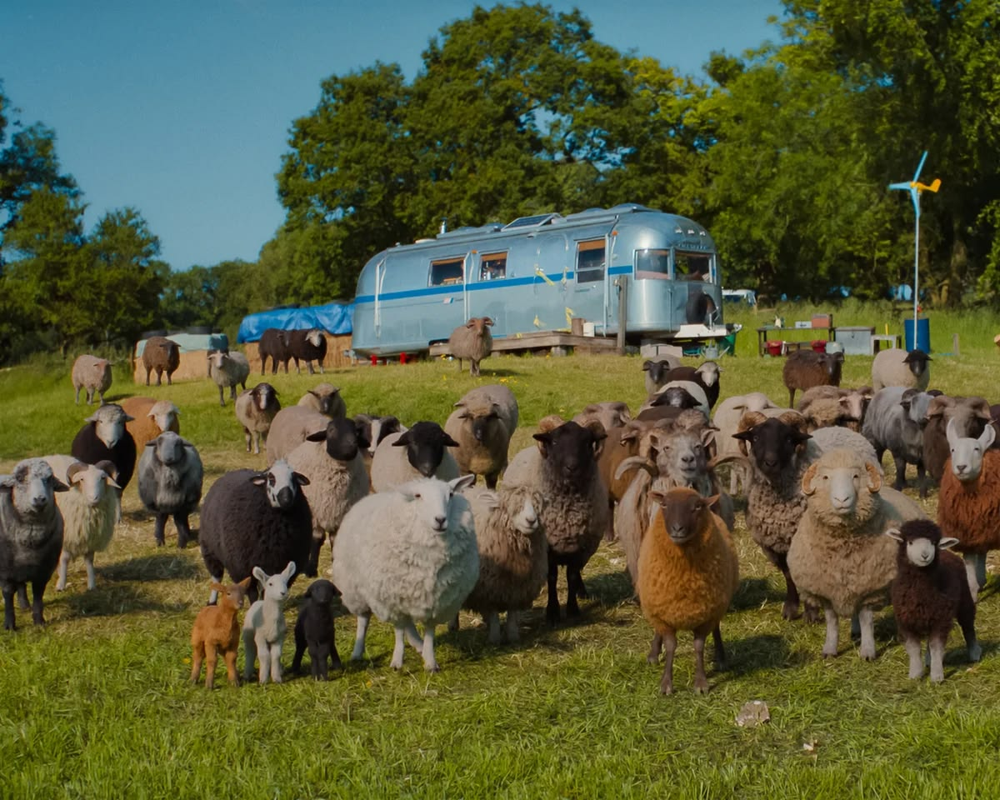
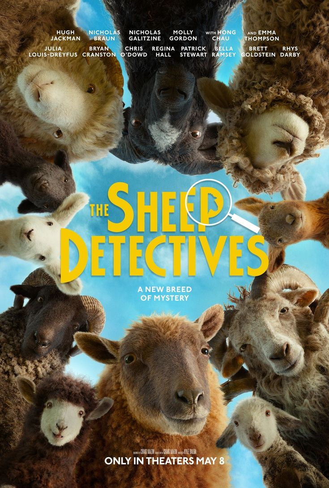

Mystery, Comedy
2026
109 minutes
Kyle Balda
The Sheep Detectives follows a flock of clever sheep whose beloved shepherd, George Hardy, is found dead under mysterious circumstances. Inspired by the detective stories he read to them, the sheep secretly set out to solve the murder themselves, uncovering long-buried secrets hidden within their quiet English village.